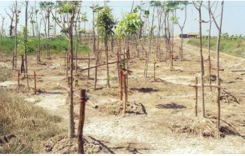

เมื่อแกลังดินเสร็จแล้ว ต่อไปก็ต้องมีวิธีการปรับปรุงดินให้ดีขึ้น โดยมีหลายวิธีการดังนี้ ใช้ปูน เช่น ปูนขาว ปูนมาร์ล เปลือกหอยบด หรือหินปูนฝุ่นใส่ลงไปในดินประมาณ 1-3 ตันต่อไร่ แล้วผสมให้เข้ากันปูนซึ่งเป็นเบสจะทำปฏิกิริยาสะเทินกับกรดกำมะถันในดิน ทำให้ดินมีสภาพเป็นกลาง ใช้น้ำชะล้างกรดในดินโดยตรง วิธีการนี้ใช้เวลานานกว่าวิธีใช้ปูน แต่ได้ผลเหมือนกัน ยกร่องเพื่อปลูกพืชไร่ ไม้ผล หรือไม้ยืนต้น โดยต้องมีแหล่งน้ำอยู่ข้าง ๆ เพื่อถ่ายเทน้ำได้ ถ้าน้ำในร่องเป็นกรดเมื่อใช้น้ำชะล้ำางกรดบนสันร่อง กรดจะถูกน้ำชะไปยังคูที่อยู่ด้านข้าง แล้วระบายออกไป และต้องคำนึงถึงการเกิดน้ำท่วมในพื้นที่ด้วย ถ้ามีโอกาสน้ำจะท่วม ก็ไม่ควรใช้วิธีนี้ ควบคุมระดับน้ำใต้ดิน ไม่ให้ต่ำกว่า 1 เมตร เพื่อป้องกันไม่ให้ดินชั้นล่างแห้ง หรือทำปฏิกิริยากับออกซิเจน ซึ่งควรจะต้องมีแหล่งน้ำจากระบบชลประทานเข้ามาช่วย ใช้พืชพันธุ์ที่ทนทานต่อความเป็นกรดมาปลูกในดินเปรี้ยว เช่น มะม่วง มะขาม กระท้อน ขนุน ฝรั่ง ยูคาลิปตัส สะเดา อื่น ๆ
อย่างไรก็ตาม "โครงการแกล้งติน" ไม่ได้สิ้นสุดลงเฉพาะที่จังหวัดนราธิวาสเท่านั้น แต่ยังได้นำไปใช้กับจังหวัดอื่น ๆ ด้วย โดยในปีพ.ศ. 2535 ได้มีการนำไปใช้ในโครงการพัฒนาพื้นที่ลุ่มน้ำปากพนัง อันเนื่องมาจากพระราชดำริ จังหวัดนครศรีธรรมราช พื้นที่บางส่วนของจังหวัดพัทลุง และจังหวัดสงขลา และโครงการพัฒนาพื้นที่ พรุแฆแฆ อันเนื่องมาจากพระราชดำริ อำเภอสายบุรี จังหวัดปัตตานีและในปี พ.ศ. 2541 ได้นำมาใช้กับโครงการศึกษาทดลองการแก้ปัญหาดินเปรี้ยว อันเนื่องมาจากพระราชดำริ อำเภอบ้านนา จังหวัดนครนายก ดังนั้นโครงการนี้ จึงเป็นโครงการที่สร้างประโยชน์ให้แก่ราษฎรทั่วประเทศ

โครงการศึกษาทดลองการแก้ปัญหาดินเปรี้ยวอันเนื่องมาจากพระราชดำริ อำเภอบ้านนา จังหวัดนครนายก
https://www.scimath.org/article-chemistry/item/12420-2021-08-23-06-06-47